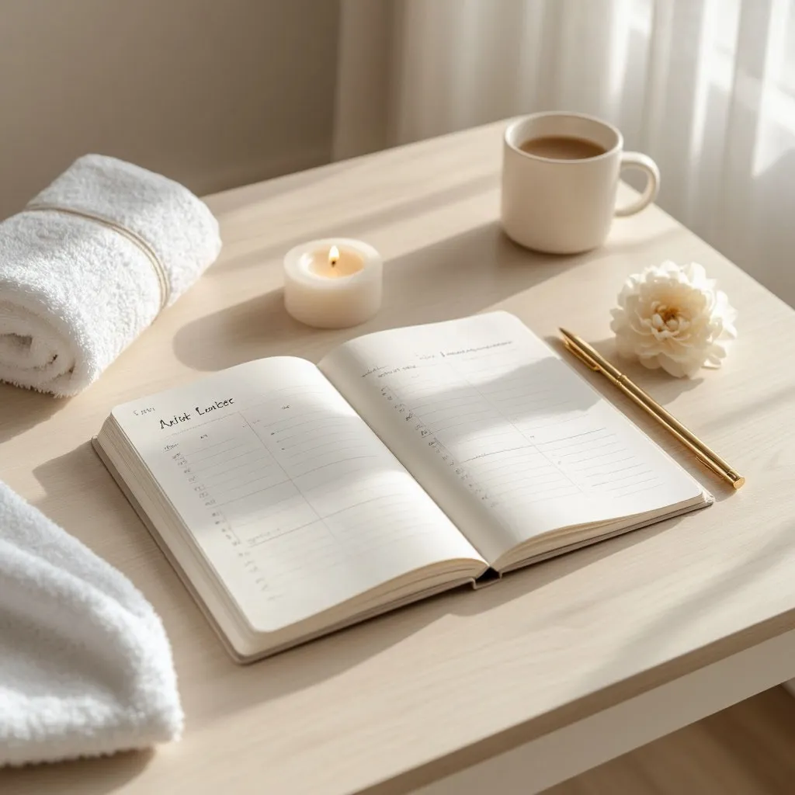

Как подготовиться к лазерной эпиляции за 2 недели: полный чек-лист

Правильная подготовка к лазерной эпиляции — это половина успеха. От того, что вы делаете за 2 недели до процедуры, зависит и эффективность, и комфорт, и отсутствие побочных эффектов. Наши мастера в студии у метро Водный стадион собрали полный чек-лист.
За 2 недели до процедуры
Исключите солнце и солярий. Загар — главный враг лазерной эпиляции. Кожа должна быть естественного оттенка. Если вы загорали, подождите минимум 14 дней. Используйте SPF 30+ даже в городе.
Откажитесь от воска и шугаринга. Лазеру нужен волосяной фолликул. Если вы вырвали волос воском, лазеру нечего будет разрушать. Переходите на бритву.
Не используйте химические пилинги и скрабы в зоне эпиляции — кожа должна быть спокойной.
За 1 неделю до процедуры
Прекратите приём антибиотиков и гормональных препаратов — проконсультируйтесь с врачом, если принимаете что-то постоянно.
Не наносите спиртосодержащие лосьоны на зону эпиляции.
Увлажняйте кожу ежедневно — хорошо увлажнённая кожа лучше переносит процедуру и быстрее восстанавливается.
За 1–3 дня до процедуры
Побрейте зону эпиляции. Это единственный разрешённый способ удаления волос перед лазером. Идеальное время — за 1–2 дня до сеанса. Волоски должны быть длиной 1–3 мм, чтобы лазер их «увидел».
Откажитесь от кофе и алкоголя за сутки — они повышают чувствительность кожи.
Не наносите кремы и дезодоранты в день процедуры. Кожа должна быть чистой и сухой.
Чек-лист на день процедуры
✔ Примите душ без масел и лосьонов
✔ Наденьте свободную одежду из натуральных тканей
✔ Не наносите косметику на зону эпиляции
✔ Предупредите мастера о любых изменениях в здоровье
✔ Приходите в хорошем настроении — стресс может повысить чувствительность
Что делать после процедуры
Сразу после сеанса мастер нанесёт успокаивающий крем. В первые 24–48 часов избегайте горячей ванны, бани, сауны и активного спорта. Не загорайте минимум 2 недели и ежедневно наносите SPF. Используйте увлажняющие средства без отдушек.
Почему подготовка важна именно у нас
В LaserSilk мы работаем на диодном лазере EVOLUTION с мощной системой охлаждения. При правильной подготовке процедура проходит максимально комфортно и даёт видимый результат уже после первого раза. Мастера с медицинским образованием всегда напомнят о правилах и ответят на вопросы.
Готовы к первой процедуре?
Запишитесь на консультацию в студию у м. Водный стадион. Мы расскажем всё лично, подберем дату и подарим скидку 30% новым клиентам.
ЗаписатьсяЗвоните: 8 (991) 574-47-17
подскажем, какая эпиляция вам подходит.